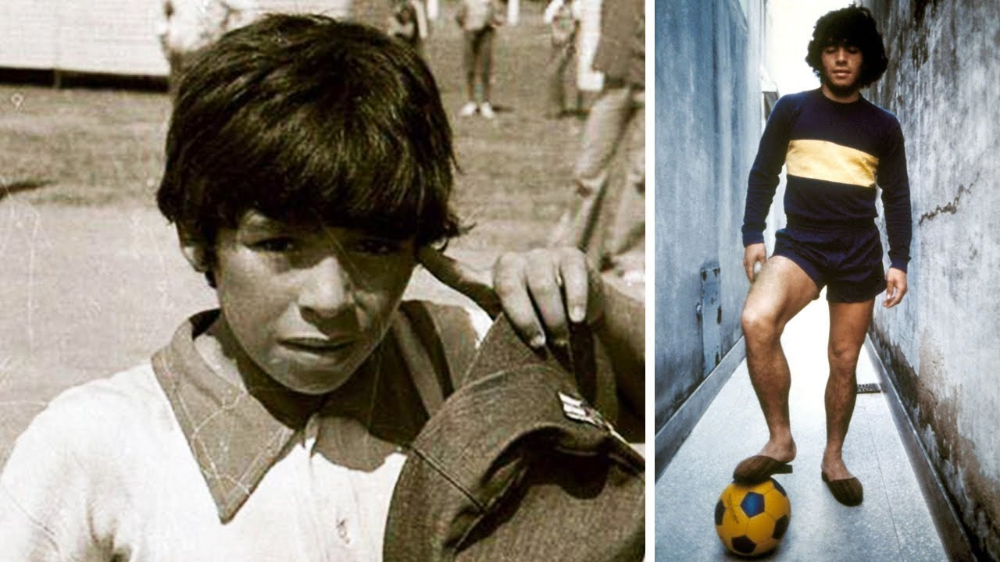

Diego Armando Maradona, argentinski fudbaler, rođen je 30.oktobra 1960. godine. u Buenos Airesu, u Argentini. Odrastao je u faveli, ali je u ranoj mladosti pokazao izuzetan talenat za fudbal. Počeo je da igra za Argentinos Juniors pre nego što je prešao u jedan od najslavnijih klubova u Argentini, Bocu Juniors.
Maradona je brzo postao poznat, bio je fudbalski mađioničar, a samo sa 18. godina počeo je da igra za reprezentaciju Argentine.
Najveći trenuci u njegovoj karijeri došli su tokom FIFA Svetskog prvenstva 1986. godine u Meksiku. Maradona je bio kapiten i predvodio je tim do osvajanja titule. Postigao je dva najpoznatija gola u istoriji fudbala: "Božiji gol" gde je predriblao čitav tim Engleske reprezentacije, i "Božija ruka" gol, gde je isti postigao rukom koji ga je odveo u fudbalsku legendu.
Maradona je igrao još i za Barcelonu i Napoli, gde je bio voljen i postovan kao niko pre. U Napoliju je postao legenda, slavile su ga ulice grada, postao je Božanstveni lik u gradu. U Napoliju je osvojio dve titule prvaka Italije.
Pored cvetanja fudbalske karijere i njegovog lika i dela, borio se sa drogom i zdravstvenim problemima. Njegovo ime u svetu osim za fudbal, bilo je vezano i za kokain. Preminuo je 25.novembra 2020.godine, upamćen kao najveći ikada.
| Klub/Tim | Odigrane utakmice | Golovi | Trofeji | Trajanje karijere |
|---|---|---|---|---|
| Boca Juniors | 71 | 35 | 1 | 1981.-1982., 1995. |
| Barcelona | 58 | 38 | 4 | 1982.-1984. |
| Napoli | 259 | 115 | 5 | 1984.-1991. |
| Rep.Argentina | 91 | 34 | 1 | 1977.1994. |